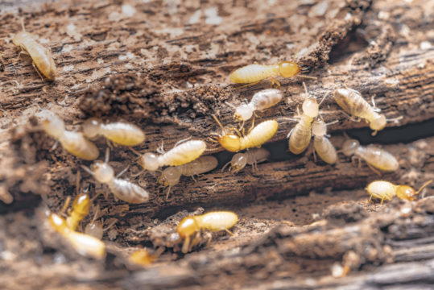

Cupins
São insetos sociais que vivem em colônias organizadas. Perdas ocorrem com falhas na brotação das soqueiras e redução da longevidade do canavial. A maioria das espécies de cupins não é agressiva à cultura, ao contrário é benéfica. Podem reduzir em até 10 t de cana/ha/ano, além de ocasionarem redução da longevidade do canavial.
detalhes